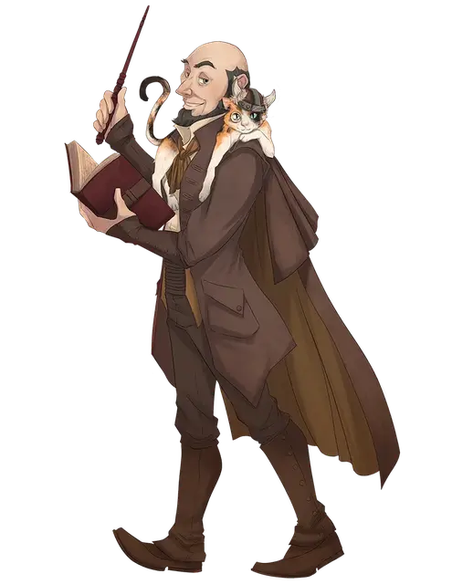

Флаббергаст
Flabbergast
Средний Гуманоид (Человек), законно-нейтральный, именной НИП

Класс Доспеха 12 (15 с доспехами мага)
Хиты 40 (9к8)
Скорость 30 футов
| мод | спас | ||
|---|---|---|---|
| СИЛ | 10 | +0 | +0 |
| ЛОВ | 14 | +2 | +2 |
| ТЕЛ | 10 | +0 | +0 |
| мод | спас | ||
|---|---|---|---|
| ИНТ | 17 | +3 | +5 |
| МДР | 13 | +1 | +3 |
| ХАР | 13 | +1 | +1 |
Навыки Восприятие +3, История +5, Магия +5, Убеждение +3
Чувства пассивное Восприятие 13
Языки Общий, Гномий, Драконий, Эльфийский
Опасность 4 (1100 опыта)
Бонус мастерства +2
Особенности
Использование заклинаний. Флаббергаст является заклинателем 9-го уровня. Его базовой характеристикой является Интеллект (Сл спасброска от заклинания 15, +7 к попаданию атаками заклинаниями). У него подготовлены следующие заклинания волшебника:
• Заговоры (неограниченно): огненный снаряд [fire bolt], свет [light], волшебная рука [mage hand], фокусы [prestidigitation];
• 1 уровень (4 ячейки): обнаружение магии [detect magic], доспехи мага [mage armor], искажение цены [distort value];
• 2 уровень (3 ячейки): подарок болтуна [gift of gab], внушение [suggestion];
• 3 уровень (3 ячейки): быстрые друзья [fast friends], молния [lightning bolt];
• 4 уровень (3 ячейки): высшая невидимость [greater invisibility];.
• 5 уровень (1 ячейки): конус холода [cone of cold].
Действия
Кинжал. . Рукопашная или дальнобойная атака оружием: +4 к попаданию, досягаемость 5 футов или дистанция 20/60 футов, одна цель. Попадание: 4 (1к4 + 2) колющего урона.
Описание
Не так много известно о таинственном и отчужденном дворецком Головного офиса Acquisitions Incorporated, маге, известном как Флаббергаст. Говорят, что он родом из Невервинтера, и что его богатая семья помогла возвести и вырезать знаменитый мост Дельфинов в этом городе. Несмотря на то, что он ненавидит физический труд, Флаббергаст по-своему немного строит мосты, всегда стремясь объединить людей и напрягая свои дипломатические мускулы. Пацифистский бюрократ, он ненавидит насилие и редко выставляет напоказ свое магическое мастерство.
Одна вещь, которая известна (хотя об этом редко говорят), заключается в том, что Флаббергаст когда-то работал на Dran Enterprises, и в частности на Портентиа Драна. Он несет определенную долю вины за то, что был замешан в определенных сделках Dran Enterprises, и помогал Acquisitions Incorporated на стороне еще до того, как занял официальную должность в компании. Хотя Главный офис, безусловно, доверяет ему, другие могут задаться вопросом, в чем заключается его истинная лояльность.
Фамильяр Флаббергаста, мистер Сниббли, использует блок характеристик кошки [cat].